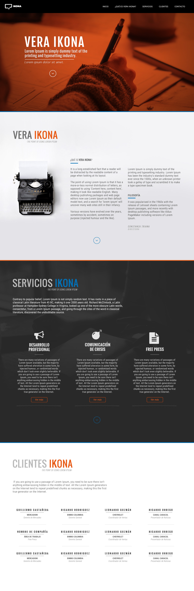

Propuesta Vera Ikona
Primer acercamiento
Hola Conny,
Luego de la reu del sábado, ver las páginas de referencia que me enviaste y ver que finalmente estamos de acuerdo con que necesitas una página web sencilla, he pensado en la siguiente propuesta {Totalmente sujeta a cambios y ajustes. En cuando a la propuesta de diseño es un primer acercamiento para que la veas y si te parece bien podemos empezar a trabajar a partir de aquí. Si hay que replantear algo o todo lo hacemos ;) }
*Para tener en cuenta:
· Todos los textos son simulados.
· Los servicios se cambiarían por los que finalmente se van a ofrecer.
· Al darle click en "ver más" debajo de cada servicio nos llevaría a una página dónde se puede ampliar más la información del servicio y este contenido llevaría una fotografía alusiva. Allí podrías explicar el porque le puede servir ese servicio a una persona, empresa o área de una compañía, en otras palabas los beneficios y demás cosas que puedan llegar a activar la necesidad en los clientes por decirlo de alguna manera.
· Falta el formulario de contacto pero obviamente iría junto a su respectiva información como lo es la cuenta de correo, un número telefónico y/o Whatsapp por ejemplo (Si lo ves conveniente).
Lo primero que hice fue definir que tipo de contenido es el que deberías tener en la página, con lo que llegué a lo siguiente:
- Home: Desde hace unos años no se brandea demasiado la página, el uso de la tipografía está en auge y se suele llevar todo hacia el diseño editorial que estoy seguro puede funcionar muy bien para VERA IKONA y nos montamos en el movimiento actual de las páginas web. El logo iría en la parte superior izquierda, que es el botón que nos lleva siempre a la página inicial. También iría en la parte final en la sección de contacto.
- Acerca de VERA IKONA: Aquí me parece importante ser concretos con la descripción de VERA IKONA. Tienes una gran ventaja y es que escribes, por lo que aquí debería ir un texto que de alguna manera seduzca y se salga de lo tradicional, eso si, sin llegar a ser choco loco porque lo primordial es que tus clientes actuales y futuros (que los conoces mejor que yo) se sientan de alguna manera identificados o cómodos con el lenguaje que se maneje en toda tu marca.
Adicionalmente se me ocurrió que podrías poner si gustas algo como de filosofía, o de la misión que me habías mostrado el sábado. Esos detalles los podemos ir viendo sobre la marcha. Lo ideal es que si tienes un valor agregado o elemento diferenciador sobre la competencia lo pongamos si o si.
- Servicios: Para esta sección lo más importante es tener bien definidos los servicios que vas a prestar, a veces menos es más y si logramos ser directos con los textos, los clientes que lleguen allí querrán hacer click en ver más para saber a fondo todo lo relacionado con cada ítem de esta sección, que como te digo más arriba, dicho botón los llevaría a una página donde pueden encontrar información más detallada del asunto. ¿Por qué no poner toda la info de una vez aquí? Lo mejor es ser organizados y mesurados con la información, me explico, si ponemos todo podemos espantar a las personas que lleguen allí, una de las cosas feas del internet es que ha vuelto perezosa a la humanidad, todo está en internet y la gente pierde los hábitos de lectura tradicionales, estamos en la era de la inmediatez de la información donde las personas quieren saber sólo lo que les interesa y rápidamente, lo que nos lleva a los comunicadores a ser totalmente concretos con lo que queremos decir.
- Clientes: Como te comentaba ese día, sería bueno si podemos poner algunos de los clientes con los que haz trabajado, no tienen que ser tantos como puse, o si los tiene igual los ponemos. En cuanto al diseño este va a variar porque depende de la información que pongamos allí, ej. nombres, compañías, logos, fotos, o un par de los anteriores, no sé.
- Contacto: Como te digo en la parte de arriba, aquí iría el formulario de contacto, e-mail, teléfono de contacto y/o Wahtsapp, y link a redes sociales.
Algo muy pero muy importante es definir un perfil de tus clientes, edades, estratos, sector laboral y nivel educativo, de pronto se me pasan algunos pero si recuerdo te digo, esto para qué? nos va ayudar a definir tamaños de letras, optimización de colores, ajustar diagramación, y generación del lenguaje, que es importante que cualquier persona entienda lo que hace VERA IKONA pero también vaya enfocado a quienes debe ir, no puedes simplemente dar un tiro al aire y ver quienes llegan.
Como te decía el sábado, en este momento tu canal de ventas no es la página web, pero te va a servir como segundo canal después de una entrega de tarjeta en una reunión, o cosas así. La página tiene que representar a VERA IKONA sin necesidad de que alguien esté explicando cada párrafo o contenido dispuesto en ella.
En cuanto a costos, pues mira, Te cobraría $600.000 (Libres de impuestos) por diseño y montaje de la página.
Hay un costo adicional que no es mío, y que en dado caso yo te pongo en contacto con ese proveedor. Esto está relacionado con el hosting (Espacio en megas para guardar la información de la página en internet. Allí irían los archivos de la página web y podrás publicar comunicados de prensa, presentaciones y demás cosas que necesites tener colgados en internet, como por ejemplo lo que hago yo al enviarte este link desde mi página "www.andresbarrera.com/veraikona.html").
Lo segundo y no menos importante es el dominio, que en mi caso es "andresbarrera.com", ya habrá que ver con cual te quedas, veraikona, vera, ikona, etc. Hay que chequear la disponibilidad del dominio y se compra.
Estas dos cosas, hosting y dominio a mi me cuestan $170.000 anuales y tengo cuentas de correo personalizadas con mi dominio ej. "yosoy@andresbarrera.com". La ventaja de la persona que te recomiendo es que es conocida y da soporte casi cualquier día, el fue compañero de Chris y mío en Campus Party, es de total confianza y es una persona muy dispuesta a ayudar con lo que se necesite. Si tienes o conoces a alguien más no hay ningún lío.
Lamento la tardanza con esto, esta semana empezó con toda pero bueno, es mejor así cuando hay cosas para hacer y no al revés.
Ten envío un fuerte abrazo y quedo atento a tus comentarios.
Gus.
PD: De antemano disculpas si la redacción está un poco hippie, a esta hora el cerebro no procesa igual.
